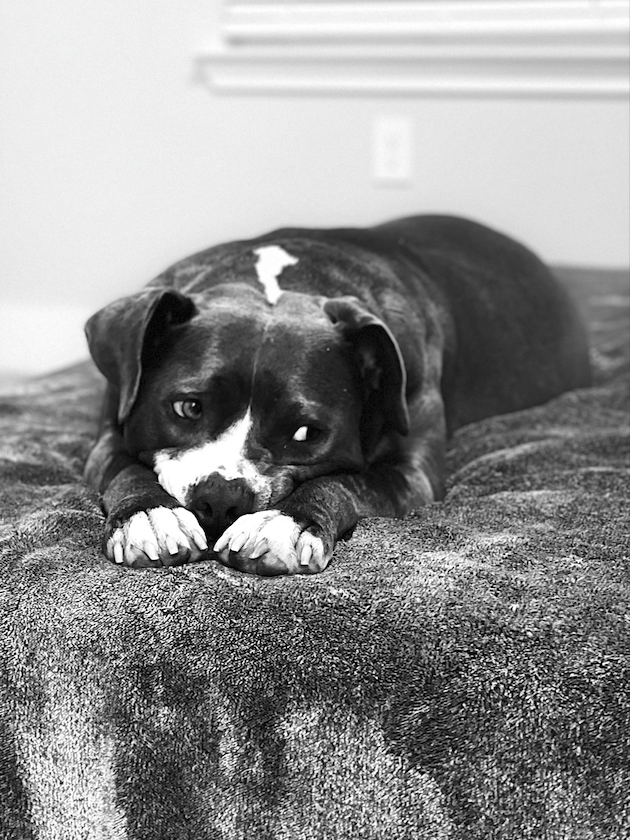

All About Buster
Buster's favorite things:
- ME
- Cheese
- His new bunny toy
- His blankie
How Buster Came Into My Life
I actually got Buster from one of my best friends! He was her husband's dog. They
had three animals in total and just had their first baby! With three animals and a
new baby, it was a lot to handle. They knew I was completely in love with Buster and
vice versa so they asked if I was willing to adopt him. I, of course, said yes with
no hesitation!
That is how Buster became the light of my life.